2.10. Hyeyoung Sim: Clustering Electric Vehicle Charging Pattern with DTW and EV Charging energy demand Prediction with LSTM
[246]:
# !pip install dtw-python
# !pip install numpy
# !pip install pandas
# !pip install time
# !pip install datetime
# !pip install openpyxl
# !pip install tensorflow
# !pip install seaborn
# !pip install sklearn
# !pip install keras
# !pip install shap
[1]:
import time
from datetime import datetime
import numpy as np
import dtw
import pandas as pd
import os
import matplotlib.pyplot as plt
import tensorflow as tf
import seaborn as sns
from sklearn.metrics import r2_score
from sklearn.metrics import mean_absolute_error , mean_squared_error
from sklearn.preprocessing import MinMaxScaler
from sklearn.preprocessing import LabelEncoder
from keras.callbacks import EarlyStopping
from keras.models import load_model
from keras.callbacks import ModelCheckpoint
from tensorflow.keras.layers import LSTM, Dense, Dropout, BatchNormalization
from tensorflow.keras.models import Sequential
Importing the dtw module. When using in academic works please cite:
T. Giorgino. Computing and Visualizing Dynamic Time Warping Alignments in R: The dtw Package.
J. Stat. Soft., doi:10.18637/jss.v031.i07.
2022-06-17 03:50:12.753342: W tensorflow/stream_executor/platform/default/dso_loader.cc:64] Could not load dynamic library 'libcudart.so.11.0'; dlerror: libcudart.so.11.0: cannot open shared object file: No such file or directory
2022-06-17 03:50:12.753381: I tensorflow/stream_executor/cuda/cudart_stub.cc:29] Ignore above cudart dlerror if you do not have a GPU set up on your machine.
[2]:
print(os.getcwd())
/media/sf_LVM_shared/tmpp
[3]:
# print(os.path.realpath('21_keco.xlsx'))
# base_dir = '/media/sf_LVM_shared/tmpp'
# excel_file = '21_keco.xlsx'
# excel_dir = os.path.join(base_dir, excel_file)
# a = pd.read_excel(excel_dir, sheet_name = '21_1')
# a2 = pd.read_excel(excel_dir, sheet_name = '21_2')
# a3 = pd.read_excel(excel_dir, sheet_name = '21_3')
# a4 = pd.read_excel(excel_dir, sheet_name = '21_4')
# a5 = pd.read_excel(excel_dir, sheet_name = '21_5')
# a6 = pd.read_excel(excel_dir, sheet_name = '21_6')
# a7 = pd.read_excel(excel_dir, sheet_name = '21_7')
# a8 = pd.read_excel(excel_dir, sheet_name = '21_8')
# a9 = pd.read_excel(excel_dir, sheet_name = '21_9')
# a10 = pd.read_excel(excel_dir, sheet_name = '21_10')
# a11 = pd.read_excel(excel_dir, sheet_name = '21_11')
# a12 = pd.read_excel(excel_dir, sheet_name = '21_12')
[4]:
a1 = pd.read_table('/media/sf_LVM_shared/tmpp/18_keco.txt' , sep = "/")
a2 = pd.read_table('/media/sf_LVM_shared/tmpp/19_keco.txt' , sep = "/")
a3 = pd.read_table('/media/sf_LVM_shared/tmpp/20_keco.txt' , sep = "/")
a4 = pd.read_table('/media/sf_LVM_shared/tmpp/21_keco.txt' , sep = ":")
a5 = pd.read_table('/media/sf_LVM_shared/tmpp/22_keco.txt' , sep = "/")
[5]:
print(a1.columns)
print(a2.columns)
print(a3.columns)
print(a4.columns)
print(a5.columns)
Index(['dc', 'CNM', 'add', 'Max.vol', 'acvol', 'diffhour', 'starttm', 'endtm'], dtype='object')
Index(['dc', 'CNM', 'add', 'Max.vol', 'acvol', 'diffhour', 'starttm', 'endtm'], dtype='object')
Index(['dc', 'CNM', 'add', 'Max.vol', 'acvol', 'diffhour', 'starttm', 'endtm'], dtype='object')
Index(['type', 'dc', 'CNM', 'add', 'Max.vol', 'acvol', 'diffhour', 'diffmin',
'starttm', 'endtm'],
dtype='object')
Index(['type', 'dc', 'CNM', 'add', 'Max.vol', 'acvol', 'diffhour', 'diffmin',
'starttm', 'endtm'],
dtype='object')
[6]:
a1 = a1[['CNM', 'add', 'Max.vol', 'acvol', 'starttm', 'endtm']]
a2 = a2[['CNM', 'add', 'Max.vol', 'acvol', 'starttm', 'endtm']]
a3 = a3[['CNM', 'add', 'Max.vol', 'acvol', 'starttm', 'endtm']]
a4 = a4[['CNM', 'add', 'Max.vol', 'acvol', 'starttm', 'endtm']]
a5 = a5[['CNM', 'add', 'Max.vol', 'acvol', 'starttm', 'endtm']]
[7]:
c = pd.concat([a1,a2,a3,a4,a5])
c.shape
[7]:
(855137, 6)
[8]:
c.dtypes
[8]:
CNM object
add object
Max.vol int64
acvol float64
starttm int64
endtm int64
dtype: object
[11]:
c['start'] = c['starttm'].astype(str)
c['end'] = c['endtm'].astype(str)
[13]:
c['start'] = pd.to_datetime(c['start'])
c['start'] = c['start'].dt.tz_localize('Asia/Seoul')
print(c['start'])
1 2018-01-01 00:17:16+09:00
2 2018-01-01 00:35:24+09:00
3 2018-01-01 00:59:13+09:00
4 2018-01-01 01:06:31+09:00
5 2018-01-01 01:24:24+09:00
...
125453 2022-03-30 16:22:47+09:00
125454 2022-03-30 16:32:43+09:00
125455 2022-03-30 16:38:09+09:00
125456 2022-03-30 16:30:22+09:00
125457 2022-03-30 16:27:55+09:00
Name: start, Length: 855137, dtype: datetime64[ns, Asia/Seoul]
[14]:
c['endsec'] =c['end'].str.slice(12,14)
[15]:
c['endsec'] = pd.to_numeric(c['endsec'], errors = 'coerce')
c = c[c.endsec <=59]
[16]:
c['endmin'] = c['end'].str.slice(10,12) #min <=59
c['endmin'] = pd.to_numeric(c['endmin'], errors = 'coerce')
c = c[c.endmin <=59]
c['end'] = pd.to_datetime(c['end'])
c['end'] = c['end'].dt.tz_localize('Asia/Seoul')
print(c['end'])
1 2018-01-01 00:54:56+09:00
2 2018-01-01 01:09:26+09:00
3 2018-01-01 01:22:13+09:00
4 2018-01-01 01:36:11+09:00
5 2018-01-01 01:35:49+09:00
...
125453 2022-03-30 16:42:32+09:00
125454 2022-03-30 17:13:06+09:00
125455 2022-03-30 17:13:47+09:00
125456 2022-03-30 17:10:22+09:00
125457 2022-03-30 17:07:55+09:00
Name: end, Length: 851558, dtype: datetime64[ns, Asia/Seoul]
[17]:
c['date_time']= c.start.dt.to_period('H')
/home/user/SE_data/juplab_env/lib/python3.8/site-packages/pandas/core/arrays/datetimes.py:1162: UserWarning: Converting to PeriodArray/Index representation will drop timezone information.
warnings.warn(
[18]:
c['SIG'] = c['add'].str.slice(6,9)
[19]:
# print(c.isnull().sum())
print(c['Max.vol'].max())
print(c['Max.vol'].min())
200
50
[20]:
from datetime import datetime
c['diff'] = (c['end'] - c['start'])
c['difhour'] = c['diff'].dt.seconds
c['diff'].head()
[20]:
1 0 days 00:37:40
2 0 days 00:34:02
3 0 days 00:23:00
4 0 days 00:29:40
5 0 days 00:11:25
Name: diff, dtype: timedelta64[ns]
[21]:
c['difhour'].head()
[21]:
1 2260
2 2042
3 1380
4 1780
5 685
Name: difhour, dtype: int64
[22]:
c['difhour'] = c['difhour']/3600
c['difhour'].head()
[22]:
1 0.627778
2 0.567222
3 0.383333
4 0.494444
5 0.190278
Name: difhour, dtype: float64
[23]:
c['log_date'] = c['start'].dt.date
c['log_hour']=c['start'].dt.hour
# # print(c['start'].strftime("%c"))
# print(c['log_date'])
# print(c['log_hour'])
# # c['date_time'] =
[24]:
c['volh'] = c['acvol']/c['difhour']
c['outlier'] = np.where( c['volh']<= c['Max.vol'], 'ok', 'no')
c2 = c[c['outlier'] == 'ok']
print(len(c))
print(len(c2))
851558
850664
[25]:
# min hour/ max hour
c2 = c2[(c2['difhour'] >= 0.083333)&(c2['difhour'] <= 24) ] #5/60 = 0.08333
print(len(c2))
print(c2['difhour'].max())
print(c2['difhour'].min())
827489
23.988333333333333
0.08333333333333333
[26]:
c2['year'] = c2['start'].dt.year
c2['month'] = c2['start'].dt.month
c2['day'] = c2['start'].dt.day
[27]:
c2['dateint'] = c2['year']*10000 + c2['month']*100 + c2['day'] + c2['log_hour']/24
print(c2.dateint.head())
1 2.018010e+07
2 2.018010e+07
3 2.018010e+07
4 2.018010e+07
5 2.018010e+07
Name: dateint, dtype: float64
[28]:
c2.columns
[28]:
Index(['CNM', 'add', 'Max.vol', 'acvol', 'starttm', 'endtm', 'start', 'end',
'endsec', 'endmin', 'date_time', 'SIG', 'diff', 'difhour', 'log_date',
'log_hour', 'volh', 'outlier', 'year', 'month', 'day', 'dateint'],
dtype='object')
[29]:
df= c2.drop(['add','Max.vol', 'acvol', 'starttm', 'endtm', 'end', 'diff', 'outlier'], axis=1)
[30]:
print(len(df['SIG'].unique()))
print(df.head()) #FINAL DATA
25
CNM start endsec endmin date_time \
1 볏골공원 지하공영주차장 2018-01-01 00:17:16+09:00 56.0 54 2018-01-01 00:00
2 노보텔 2018-01-01 00:35:24+09:00 26.0 9 2018-01-01 00:00
3 종묘 공영주차장 2018-01-01 00:59:13+09:00 13.0 22 2018-01-01 00:00
4 현대블루핸즈 대치북부점 2018-01-01 01:06:31+09:00 11.0 36 2018-01-01 01:00
5 노보텔 2018-01-01 01:24:24+09:00 49.0 35 2018-01-01 01:00
SIG difhour log_date log_hour volh year month day \
1 강서구 0.627778 2018-01-01 0 37.529204 2018 1 1
2 강남구 0.567222 2018-01-01 0 26.515181 2018 1 1
3 종로구 0.383333 2018-01-01 0 36.652174 2018 1 1
4 강남구 0.494444 2018-01-01 1 41.420225 2018 1 1
5 강남구 0.190278 2018-01-01 1 36.367883 2018 1 1
dateint
1 2.018010e+07
2 2.018010e+07
3 2.018010e+07
4 2.018010e+07
5 2.018010e+07
[31]:
# df = c2.groupby(["SIG", "log_date", "log_hour"])['volh'].mean().reset_index()
df_datetime = df.groupby(["SIG", "date_time"])['volh'].mean().reset_index()
df_datetime.head()
[31]:
| SIG | date_time | volh | |
|---|---|---|---|
| 0 | 강남구 | 2018-01-01 00:00 | 26.515181 |
| 1 | 강남구 | 2018-01-01 01:00 | 32.737450 |
| 2 | 강남구 | 2018-01-01 02:00 | 28.364020 |
| 3 | 강남구 | 2018-01-01 05:00 | 30.652220 |
| 4 | 강남구 | 2018-01-01 06:00 | 32.791086 |
[32]:
##only for gn
df_datetime_gn = df_datetime[(df_datetime['SIG'] == '강남구')]
len(df_datetime_gn)
[32]:
25718
###Daily EV charging
[35]:
df.SIG.unique()
[35]:
array(['강서구', '강남구', '종로구', '광진구', '서초구', '영등포', '구로구', '강동구', '마포구',
'관악구', '송파구', '은평구', '성북구', '용산구', '동대문', '노원구', '서대문', '성동구',
'중구 ', '중랑구', '양천구', '동작구', '강북구', '금천구', '도봉구'], dtype=object)
[36]:
df_logdate = df.groupby(["SIG", "log_date"])['volh'].mean().reset_index()
df_logdate.head()
##only for gn
df_logdate_gn = df_logdate[(df_logdate['SIG'] == '강남구')]
dataframe= df_logdate_gn.drop(['SIG', 'log_date'], axis=1)
dataset = dataframe.values
dataset = dataset.astype('float32')
[37]:
# #plotting the data
# plt.figure(figsize=(16,8))
# plt.title('Close Price History')
plt.plot(dataframe['volh'], color='red')
plt.xlabel('Date', fontsize=18)
plt.ylabel('EV Charging', fontsize = 18)
plt.show()
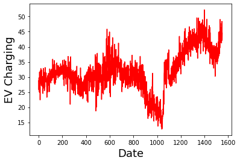
[38]:
# normalize the dataset
print(dataset.shape)
scaler = MinMaxScaler(feature_range=(0, 1))
dataset = scaler.fit_transform(dataset)
(1551, 1)
[39]:
# split into train and test sets
print('len(dataset): ',len(dataset))
train_size = int(len(dataset) * 0.67)
test_size = len(dataset) - train_size
train, test = dataset[0:train_size,:], dataset[train_size:len(dataset),:]
print(len(train), len(test))
len(dataset): 1551
1039 512
[40]:
# convert an array of values into a dataset matrix
def create_dataset(dataset, look_back=1):
dataX, dataY = [], []
for i in range(len(dataset)-look_back-1):
a = dataset[i:(i+look_back), 0]
dataX.append(a)
dataY.append(dataset[i + look_back, 0])
return np.array(dataX), np.array(dataY)
[41]:
## Let's train the LSTM using SGD as optimizer
# reshape into X=t and Y=t+1
look_back = 1
trainX, trainY = create_dataset(train, look_back)
testX, testY = create_dataset(test, look_back)
# reshape input to be [samples, time steps, features]
trainX = np.reshape(trainX, (trainX.shape[0], 1, trainX.shape[1]))
testX = np.reshape(testX, (testX.shape[0], 1, testX.shape[1]))
print('trainX.shape: ',trainX.shape)
print('trainY.shape: ',trainY.shape)
print('testX.shape: ',testX.shape)
print('trainX[:5]: ', trainX[:5,:,:].flatten())
print('trainY[:5]: ', trainY[:5])
# create and fit the LSTM network
if 'model' in globals():
print('Deleting "model"')
del model
model = Sequential()
model.add(LSTM(4, input_shape=(1, look_back))) # hidden layer with 4 LSTM blocks or neurons, with time_step=1 and features=1.
model.add(Dense(1)) # output layer that makes a single value prediction
start_time = time.time()
# Compile the model
model.compile(loss='mean_squared_error', optimizer=tf.optimizers.SGD(learning_rate=0.01))
# Fit the model
history = model.fit(trainX, trainY, epochs=50, batch_size=1, verbose=0, validation_data=(testX, testY))
# list all data in history
print('keys: ',history.history.keys())
print("--- Elapsed time: %s seconds ---" % (time.time() - start_time))
trainX.shape: (1037, 1, 1)
trainY.shape: (1037,)
testX.shape: (510, 1, 1)
trainX[:5]: [0.40584978 0.32951364 0.42946067 0.386174 0.4079348 ]
trainY[:5]: [0.32951364 0.42946067 0.386174 0.4079348 0.40748814]
2022-06-17 03:53:21.742617: W tensorflow/stream_executor/platform/default/dso_loader.cc:64] Could not load dynamic library 'libcuda.so.1'; dlerror: libcuda.so.1: cannot open shared object file: No such file or directory
2022-06-17 03:53:21.742648: W tensorflow/stream_executor/cuda/cuda_driver.cc:269] failed call to cuInit: UNKNOWN ERROR (303)
2022-06-17 03:53:21.742677: I tensorflow/stream_executor/cuda/cuda_diagnostics.cc:156] kernel driver does not appear to be running on this host (osgeolive): /proc/driver/nvidia/version does not exist
2022-06-17 03:53:21.748407: I tensorflow/core/platform/cpu_feature_guard.cc:193] This TensorFlow binary is optimized with oneAPI Deep Neural Network Library (oneDNN) to use the following CPU instructions in performance-critical operations: AVX2
To enable them in other operations, rebuild TensorFlow with the appropriate compiler flags.
keys: dict_keys(['loss', 'val_loss'])
--- Elapsed time: 227.62951803207397 seconds ---
[42]:
# summarize history for loss
def plot_hist(history):
plt.plot(history.history['loss'])
plt.plot(history.history['val_loss'])
plt.title('model loss')
plt.ylabel('loss')
plt.xlabel('epoch')
plt.legend(['train','val'], loc='upper left')
plt.show()
# make predictions
def make_preds(trainX,trainY,testX,testY):
trainPredict = model.predict(trainX)
testPredict = model.predict(testX)
# invert predictions
trainPredict = scaler.inverse_transform(trainPredict)
trainY = scaler.inverse_transform([trainY])
testPredict = scaler.inverse_transform(testPredict)
testY = scaler.inverse_transform([testY])
# calculate root mean squared error
trainScore = np.sqrt(mean_squared_error(trainY[0], trainPredict[:,0]))
print('Train Score: %.2f RMSE' % (trainScore))
print('Train R^2: ', r2_score(trainY[0], trainPredict[:,0]))
testScore = np.sqrt(mean_squared_error(testY[0], testPredict[:,0]))
print('Test Score: %.2f RMSE' % (testScore))
print('Test R^2: ', r2_score(testY[0], testPredict[:,0]))
return trainPredict, testPredict
# shift train predictions for plotting
def plot_preds(trainPredict,testPredict):
trainPredictPlot = np.empty_like(dataset)
trainPredictPlot[:, :] = np.nan
trainPredictPlot[look_back:len(trainPredict)+look_back, :] = trainPredict
# shift test predictions for plotting
testPredictPlot = np.empty_like(dataset)
testPredictPlot[:, :] = np.nan
testPredictPlot[len(trainPredict)+(look_back*2)+1:len(dataset)-1, :] = testPredict
# plot baseline and predictions
plt.plot(scaler.inverse_transform(dataset))
plt.plot(trainPredictPlot)
plt.plot(testPredictPlot)
plt.show()
[43]:
plot_hist(history)
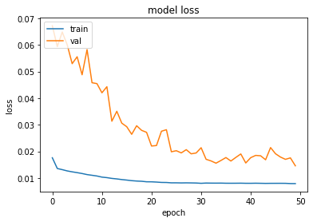
[44]:
trainPredict, testPredict = make_preds(trainX,trainY,testX,testY)
33/33 [==============================] - 1s 3ms/step
16/16 [==============================] - 0s 2ms/step
Train Score: 3.57 RMSE
Train R^2: 0.43751046016410977
Test Score: 4.77 RMSE
Test R^2: 0.43999636627656
[45]:
plot_preds(trainPredict,testPredict)
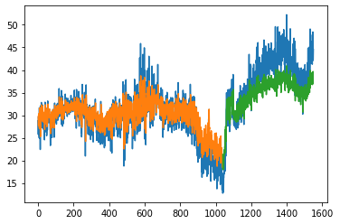
[46]:
# Let's redo it using ADAM 7;51
# reshape into X=t and Y=t+1
look_back = 1
# our data is in the form: [samples, features]
trainX, trainY = create_dataset(train, look_back)
testX, testY = create_dataset(test, look_back)
# The LSTM network expects the input data (X) to be provided with a specific array structure in the form of: [samples, time steps, features].
# Reshape input to be [samples, time steps, features]
trainX = np.reshape(trainX, (trainX.shape[0], 1, trainX.shape[1]))
testX = np.reshape(testX, (testX.shape[0], 1, testX.shape[1]))
print('trainX.shape: ',trainX.shape)
print('trainY.shape: ',trainY.shape)
print('trainX[:5]: ', trainX[:5,:,:].flatten())
print('trainY[:5]: ', trainY[:5])
# create and fit the LSTM network
if 'model' in globals():
print('Deleting "model"')
del model
model = Sequential()
model.add(LSTM(4, input_shape=(1, look_back)))
model.add(Dense(1))
start_time = time.time()
# Compile the model
model.compile(loss='mean_squared_error', optimizer=tf.optimizers.Adam(learning_rate=0.001))
# Fit the model
history = model.fit(trainX, trainY, epochs=50, batch_size=1, verbose=0, validation_data=(testX, testY))
# list all data in history
print('keys: ',history.history.keys())
print("--- Elapsed time: %s seconds ---" % (time.time() - start_time))
trainX.shape: (1037, 1, 1)
trainY.shape: (1037,)
trainX[:5]: [0.40584978 0.32951364 0.42946067 0.386174 0.4079348 ]
trainY[:5]: [0.32951364 0.42946067 0.386174 0.4079348 0.40748814]
Deleting "model"
keys: dict_keys(['loss', 'val_loss'])
--- Elapsed time: 264.29672741889954 seconds ---
[47]:
plot_hist(history)
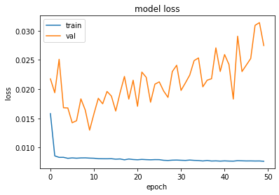
[48]:
trainPredict, testPredict = make_preds(trainX,trainY,testX,testY)
33/33 [==============================] - 1s 4ms/step
16/16 [==============================] - 0s 3ms/step
Train Score: 3.43 RMSE
Train R^2: 0.4824621484663243
Test Score: 6.54 RMSE
Test R^2: -0.05321232523693742
[49]:
plot_preds(trainPredict,testPredict)
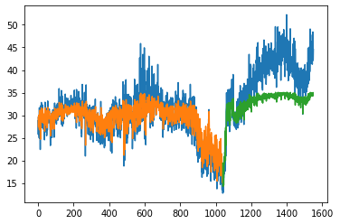
[50]:
## LSTM for Regression Using the Window Method
[51]:
# reshape into X=t and Y=t+3
look_back = 3
trainX, trainY = create_dataset(train, look_back)
testX, testY = create_dataset(test, look_back)
print('trainX.shape: ',trainX.shape)
print('trainY.shape: ',trainY.shape)
print('trainX[:5]: \n', trainX[:5])
print('trainY[:5]: \n', trainY[:5])
trainX.shape: (1035, 3)
trainY.shape: (1035,)
trainX[:5]:
[[0.40584978 0.32951364 0.42946067]
[0.32951364 0.42946067 0.386174 ]
[0.42946067 0.386174 0.4079348 ]
[0.386174 0.4079348 0.40748814]
[0.4079348 0.40748814 0.30990687]]
trainY[:5]:
[0.386174 0.4079348 0.40748814 0.30990687 0.47879067]
[52]:
# reshape input to be [samples, time steps, features]
trainX = np.reshape(trainX, (trainX.shape[0], 1, trainX.shape[1]))
testX = np.reshape(testX, (testX.shape[0], 1, testX.shape[1]))
print('trainX.shape: ',trainX.shape)
print('trainY.shape: ',trainY.shape)
print('trainX[:5]: \n', trainX[:5])
print('trainY[:5]: \n', trainY[:5])
# create and fit the LSTM network
if 'model' in globals():
print('Deleting "model"')
del model
model = Sequential()
model.add(LSTM(4, input_shape=(1, look_back)))
model.add(Dense(1))
start_time = time.time()
# Compile the model
model.compile(loss='mean_squared_error', optimizer='adam')
# Fit the model
history = model.fit(trainX, trainY, epochs=50, batch_size=1, verbose=0, validation_data=(testX, testY))
# list all data in history
print('keys: ',history.history.keys())
print("--- Elapsed time: %s seconds ---" % (time.time() - start_time))
trainX.shape: (1035, 1, 3)
trainY.shape: (1035,)
trainX[:5]:
[[[0.40584978 0.32951364 0.42946067]]
[[0.32951364 0.42946067 0.386174 ]]
[[0.42946067 0.386174 0.4079348 ]]
[[0.386174 0.4079348 0.40748814]]
[[0.4079348 0.40748814 0.30990687]]]
trainY[:5]:
[0.386174 0.4079348 0.40748814 0.30990687 0.47879067]
Deleting "model"
keys: dict_keys(['loss', 'val_loss'])
--- Elapsed time: 247.12511897087097 seconds ---
[53]:
plot_hist(history)
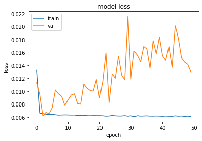
[54]:
trainPredict, testPredict = make_preds(trainX,trainY,testX,testY)
33/33 [==============================] - 1s 2ms/step
16/16 [==============================] - 0s 3ms/step
Train Score: 3.13 RMSE
Train R^2: 0.5677213355887494
Test Score: 4.50 RMSE
Test R^2: 0.476461149770418
[55]:
plot_preds(trainPredict,testPredict)
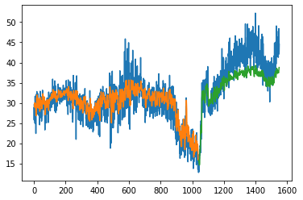
[56]:
## LSTM for Regression with Time Steps
# reshape into X=t and Y=t+1
look_back = 3
trainX, trainY = create_dataset(train, look_back)
testX, testY = create_dataset(test, look_back)
# reshape input to be [samples, time steps, features]
trainX = np.reshape(trainX, (trainX.shape[0], trainX.shape[1], 1))
testX = np.reshape(testX, (testX.shape[0], testX.shape[1], 1))
print('trainX.shape: ',trainX.shape)
print('trainY.shape: ',trainY.shape)
print('trainX[:5]: \n', trainX[:5])
print('trainY[:5]: \n', trainY[:5])
# create and fit the LSTM network
if 'model' in globals():
print('Deleting "model"')
del model
model = Sequential()
model.add(LSTM(4, input_shape=(look_back, 1))) # with time_step=3 and 1 feature.
model.add(Dense(1))
start_time = time.time()
# Compile the model
model.compile(loss='mean_squared_error', optimizer='adam')
# Fit the model
history = model.fit(trainX, trainY, epochs=50, batch_size=1, verbose=0, validation_data=(testX, testY))
# list all data in history
print('keys: ',history.history.keys())
print("--- Elapsed time: %s seconds ---" % (time.time() - start_time))
trainX.shape: (1035, 3, 1)
trainY.shape: (1035,)
trainX[:5]:
[[[0.40584978]
[0.32951364]
[0.42946067]]
[[0.32951364]
[0.42946067]
[0.386174 ]]
[[0.42946067]
[0.386174 ]
[0.4079348 ]]
[[0.386174 ]
[0.4079348 ]
[0.40748814]]
[[0.4079348 ]
[0.40748814]
[0.30990687]]]
trainY[:5]:
[0.386174 0.4079348 0.40748814 0.30990687 0.47879067]
Deleting "model"
keys: dict_keys(['loss', 'val_loss'])
--- Elapsed time: 351.80383682250977 seconds ---
[57]:
plot_hist(history)
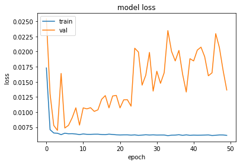
[58]:
trainPredict, testPredict = make_preds(trainX,trainY,testX,testY)
33/33 [==============================] - 1s 5ms/step
16/16 [==============================] - 0s 4ms/step
Train Score: 3.22 RMSE
Train R^2: 0.5431476837424603
Test Score: 4.61 RMSE
Test R^2: 0.45001772422963693
[59]:
plot_preds(trainPredict,testPredict)

[60]:
## LSTM with Memory Between Batches
[69]:
# # reshape into X=t and Y=t+1
# look_back = 3
# trainX, trainY = create_dataset(train, look_back)
# testX, testY = create_dataset(test, look_back)
# # reshape input to be [samples, time steps, features]
# trainX = np.reshape(trainX, (trainX.shape[0], trainX.shape[1], 1))
# testX = np.reshape(testX, (testX.shape[0], testX.shape[1], 1))
# # create and fit the LSTM network
# batch_size = 1
# if 'model' in globals():
# print('Deleting "model"')
# del model
# model = Sequential()
# model.add(LSTM(4, batch_input_shape=(batch_size, look_back, 1), stateful=True))
# model.add(Dense(1))
# start_time = time.time()
# model.compile(loss='mean_squared_error', optimizer='adam')
# for i in range(100):
# history = model.fit(trainX, trainY, epochs=50 , batch_size=batch_size, verbose=0, shuffle=False, validation_data=(testX, testY))
# model.reset_states()
# print('keys: ',history.history.keys())
# print("--- Elapsed time: %s seconds ---" % (time.time() - start_time))
[63]:
# make predictions
trainPredict = model.predict(trainX, batch_size=batch_size) #Now we need to specify the batch_size
model.reset_states()
testPredict = model.predict(testX, batch_size=batch_size)
# invert predictions
trainPredict = scaler.inverse_transform(trainPredict)
trainY = scaler.inverse_transform([trainY])
testPredict = scaler.inverse_transform(testPredict)
testY = scaler.inverse_transform([testY])
# calculate root mean squared error
trainScore = np.sqrt(mean_squared_error(trainY[0], trainPredict[:,0]))
print('Train Score: %.2f RMSE' % (trainScore))
print('Train R^2: ', r2_score(trainY[0], trainPredict[:,0]))
testScore = np.sqrt(mean_squared_error(testY[0], testPredict[:,0]))
print('Test Score: %.2f RMSE' % (testScore))
print('Test R^2: ', r2_score(testY[0], testPredict[:,0]))
1035/1035 [==============================] - 3s 2ms/step
508/508 [==============================] - 1s 2ms/step
Train Score: 3.14 RMSE
Train R^2: 0.5653176934509332
Test Score: 7.81 RMSE
Test R^2: -0.575034240837196
[64]:
## Adding Early Stopping
# Using Early stopping
# reshape into X=t and Y=t+1
look_back = 3
trainX, trainY = create_dataset(train, look_back)
testX, testY = create_dataset(test, look_back)
# reshape input to be [samples, time steps, features]
trainX = np.reshape(trainX, (trainX.shape[0], 1, trainX.shape[1]))
testX = np.reshape(testX, (testX.shape[0], 1, testX.shape[1]))
batch_size=1
print('trainX.shape: ',trainX.shape)
print('trainY.shape: ',trainY.shape)
print('trainX[:5]: ', trainX[:5].flatten())
print('trainY[:5]: ', trainY[:5])
es = EarlyStopping(monitor='val_loss', mode='min', verbose=1, patience=100)
mc = ModelCheckpoint('./models/best_model_LSTM.h5', monitor='val_loss', mode='min', verbose=1, save_best_only=True)
if 'model' in globals():
print('Deleting "model"')
del model
model = Sequential()
model.add(LSTM(4, batch_input_shape=(batch_size,1,look_back), stateful=True, return_sequences=True))
model.add(LSTM(4, batch_input_shape=(batch_size, 1,look_back), stateful=True))
model.add(Dense(1))
start_time = time.time()
# Compile the model
model.compile(loss='mean_squared_error', optimizer='adam')
# Fit the model
history = model.fit(trainX, trainY, epochs=50, batch_size=1, verbose=1, validation_data=(testX, testY),callbacks=[es, mc])
# list all data in history
print('keys: ',history.history.keys())
print("--- Elapsed time: %s seconds ---" % (time.time() - start_time))
# load the saved model
model = load_model('./models/best_model_LSTM.h5')
trainX.shape: (1035, 1, 3)
trainY.shape: (1035,)
trainX[:5]: [0.40584978 0.32951364 0.42946067 0.32951364 0.42946067 0.386174
0.42946067 0.386174 0.4079348 0.386174 0.4079348 0.40748814
0.4079348 0.40748814 0.30990687]
trainY[:5]: [0.386174 0.4079348 0.40748814 0.30990687 0.47879067]
Deleting "model"
Epoch 1/50
1025/1035 [============================>.] - ETA: 0s - loss: 0.0151
Epoch 1: val_loss improved from inf to 0.01571, saving model to ./models/best_model_LSTM.h5
1035/1035 [==============================] - 16s 10ms/step - loss: 0.0151 - val_loss: 0.0157
Epoch 2/50
1029/1035 [============================>.] - ETA: 0s - loss: 0.0095
Epoch 2: val_loss improved from 0.01571 to 0.00752, saving model to ./models/best_model_LSTM.h5
1035/1035 [==============================] - 10s 10ms/step - loss: 0.0094 - val_loss: 0.0075
Epoch 3/50
1027/1035 [============================>.] - ETA: 0s - loss: 0.0069
Epoch 3: val_loss did not improve from 0.00752
1035/1035 [==============================] - 7s 7ms/step - loss: 0.0069 - val_loss: 0.0128
Epoch 4/50
1028/1035 [============================>.] - ETA: 0s - loss: 0.0066
Epoch 4: val_loss did not improve from 0.00752
1035/1035 [==============================] - 7s 7ms/step - loss: 0.0065 - val_loss: 0.0078
Epoch 5/50
1034/1035 [============================>.] - ETA: 0s - loss: 0.0064
Epoch 5: val_loss did not improve from 0.00752
1035/1035 [==============================] - 11s 10ms/step - loss: 0.0064 - val_loss: 0.0090
Epoch 6/50
1035/1035 [==============================] - ETA: 0s - loss: 0.0065
Epoch 6: val_loss did not improve from 0.00752
1035/1035 [==============================] - 11s 10ms/step - loss: 0.0065 - val_loss: 0.0110
Epoch 7/50
1034/1035 [============================>.] - ETA: 0s - loss: 0.0065
Epoch 7: val_loss did not improve from 0.00752
1035/1035 [==============================] - 8s 8ms/step - loss: 0.0064 - val_loss: 0.0132
Epoch 8/50
1030/1035 [============================>.] - ETA: 0s - loss: 0.0064
Epoch 8: val_loss did not improve from 0.00752
1035/1035 [==============================] - 8s 8ms/step - loss: 0.0064 - val_loss: 0.0123
Epoch 9/50
1032/1035 [============================>.] - ETA: 0s - loss: 0.0064
Epoch 9: val_loss did not improve from 0.00752
1035/1035 [==============================] - 10s 9ms/step - loss: 0.0064 - val_loss: 0.0125
Epoch 10/50
1031/1035 [============================>.] - ETA: 0s - loss: 0.0064
Epoch 10: val_loss did not improve from 0.00752
1035/1035 [==============================] - 8s 8ms/step - loss: 0.0064 - val_loss: 0.0183
Epoch 11/50
1027/1035 [============================>.] - ETA: 0s - loss: 0.0063
Epoch 11: val_loss did not improve from 0.00752
1035/1035 [==============================] - 10s 10ms/step - loss: 0.0063 - val_loss: 0.0151
Epoch 12/50
1033/1035 [============================>.] - ETA: 0s - loss: 0.0063
Epoch 12: val_loss did not improve from 0.00752
1035/1035 [==============================] - 8s 7ms/step - loss: 0.0063 - val_loss: 0.0142
Epoch 13/50
1034/1035 [============================>.] - ETA: 0s - loss: 0.0063
Epoch 13: val_loss did not improve from 0.00752
1035/1035 [==============================] - 9s 8ms/step - loss: 0.0063 - val_loss: 0.0179
Epoch 14/50
1034/1035 [============================>.] - ETA: 0s - loss: 0.0063
Epoch 14: val_loss did not improve from 0.00752
1035/1035 [==============================] - 11s 11ms/step - loss: 0.0063 - val_loss: 0.0169
Epoch 15/50
1032/1035 [============================>.] - ETA: 0s - loss: 0.0063
Epoch 15: val_loss did not improve from 0.00752
1035/1035 [==============================] - 9s 9ms/step - loss: 0.0063 - val_loss: 0.0164
Epoch 16/50
1024/1035 [============================>.] - ETA: 0s - loss: 0.0063
Epoch 16: val_loss did not improve from 0.00752
1035/1035 [==============================] - 8s 8ms/step - loss: 0.0063 - val_loss: 0.0206
Epoch 17/50
1033/1035 [============================>.] - ETA: 0s - loss: 0.0064
Epoch 17: val_loss did not improve from 0.00752
1035/1035 [==============================] - 8s 8ms/step - loss: 0.0064 - val_loss: 0.0161
Epoch 18/50
1025/1035 [============================>.] - ETA: 0s - loss: 0.0062
Epoch 18: val_loss did not improve from 0.00752
1035/1035 [==============================] - 8s 7ms/step - loss: 0.0062 - val_loss: 0.0206
Epoch 19/50
1031/1035 [============================>.] - ETA: 0s - loss: 0.0063
Epoch 19: val_loss did not improve from 0.00752
1035/1035 [==============================] - 11s 10ms/step - loss: 0.0063 - val_loss: 0.0183
Epoch 20/50
1028/1035 [============================>.] - ETA: 0s - loss: 0.0063
Epoch 20: val_loss did not improve from 0.00752
1035/1035 [==============================] - 8s 8ms/step - loss: 0.0063 - val_loss: 0.0196
Epoch 21/50
1034/1035 [============================>.] - ETA: 0s - loss: 0.0063
Epoch 21: val_loss did not improve from 0.00752
1035/1035 [==============================] - 10s 10ms/step - loss: 0.0063 - val_loss: 0.0182
Epoch 22/50
1028/1035 [============================>.] - ETA: 0s - loss: 0.0062
Epoch 22: val_loss did not improve from 0.00752
1035/1035 [==============================] - 11s 10ms/step - loss: 0.0062 - val_loss: 0.0175
Epoch 23/50
1028/1035 [============================>.] - ETA: 0s - loss: 0.0063
Epoch 23: val_loss did not improve from 0.00752
1035/1035 [==============================] - 10s 10ms/step - loss: 0.0063 - val_loss: 0.0136
Epoch 24/50
1034/1035 [============================>.] - ETA: 0s - loss: 0.0063
Epoch 24: val_loss did not improve from 0.00752
1035/1035 [==============================] - 10s 9ms/step - loss: 0.0063 - val_loss: 0.0187
Epoch 25/50
1034/1035 [============================>.] - ETA: 0s - loss: 0.0062
Epoch 25: val_loss did not improve from 0.00752
1035/1035 [==============================] - 9s 8ms/step - loss: 0.0062 - val_loss: 0.0211
Epoch 26/50
1030/1035 [============================>.] - ETA: 0s - loss: 0.0063
Epoch 26: val_loss did not improve from 0.00752
1035/1035 [==============================] - 7s 7ms/step - loss: 0.0063 - val_loss: 0.0166
Epoch 27/50
1032/1035 [============================>.] - ETA: 0s - loss: 0.0062
Epoch 27: val_loss did not improve from 0.00752
1035/1035 [==============================] - 9s 9ms/step - loss: 0.0062 - val_loss: 0.0255
Epoch 28/50
1025/1035 [============================>.] - ETA: 0s - loss: 0.0061
Epoch 28: val_loss did not improve from 0.00752
1035/1035 [==============================] - 10s 9ms/step - loss: 0.0061 - val_loss: 0.0154
Epoch 29/50
1028/1035 [============================>.] - ETA: 0s - loss: 0.0063
Epoch 29: val_loss did not improve from 0.00752
1035/1035 [==============================] - 11s 11ms/step - loss: 0.0063 - val_loss: 0.0157
Epoch 30/50
1026/1035 [============================>.] - ETA: 0s - loss: 0.0062
Epoch 30: val_loss did not improve from 0.00752
1035/1035 [==============================] - 8s 8ms/step - loss: 0.0062 - val_loss: 0.0244
Epoch 31/50
1028/1035 [============================>.] - ETA: 0s - loss: 0.0062
Epoch 31: val_loss did not improve from 0.00752
1035/1035 [==============================] - 8s 8ms/step - loss: 0.0062 - val_loss: 0.0157
Epoch 32/50
1029/1035 [============================>.] - ETA: 0s - loss: 0.0063
Epoch 32: val_loss did not improve from 0.00752
1035/1035 [==============================] - 9s 9ms/step - loss: 0.0063 - val_loss: 0.0178
Epoch 33/50
1029/1035 [============================>.] - ETA: 0s - loss: 0.0062
Epoch 33: val_loss did not improve from 0.00752
1035/1035 [==============================] - 8s 8ms/step - loss: 0.0062 - val_loss: 0.0169
Epoch 34/50
1029/1035 [============================>.] - ETA: 0s - loss: 0.0063
Epoch 34: val_loss did not improve from 0.00752
1035/1035 [==============================] - 9s 9ms/step - loss: 0.0063 - val_loss: 0.0251
Epoch 35/50
1032/1035 [============================>.] - ETA: 0s - loss: 0.0062
Epoch 35: val_loss did not improve from 0.00752
1035/1035 [==============================] - 8s 8ms/step - loss: 0.0062 - val_loss: 0.0208
Epoch 36/50
1028/1035 [============================>.] - ETA: 0s - loss: 0.0062
Epoch 36: val_loss did not improve from 0.00752
1035/1035 [==============================] - 7s 7ms/step - loss: 0.0062 - val_loss: 0.0138
Epoch 37/50
1023/1035 [============================>.] - ETA: 0s - loss: 0.0063
Epoch 37: val_loss did not improve from 0.00752
1035/1035 [==============================] - 11s 11ms/step - loss: 0.0062 - val_loss: 0.0207
Epoch 38/50
1028/1035 [============================>.] - ETA: 0s - loss: 0.0062
Epoch 38: val_loss did not improve from 0.00752
1035/1035 [==============================] - 10s 10ms/step - loss: 0.0062 - val_loss: 0.0216
Epoch 39/50
1025/1035 [============================>.] - ETA: 0s - loss: 0.0061
Epoch 39: val_loss did not improve from 0.00752
1035/1035 [==============================] - 8s 8ms/step - loss: 0.0062 - val_loss: 0.0233
Epoch 40/50
1033/1035 [============================>.] - ETA: 0s - loss: 0.0062
Epoch 40: val_loss did not improve from 0.00752
1035/1035 [==============================] - 8s 8ms/step - loss: 0.0062 - val_loss: 0.0210
Epoch 41/50
1035/1035 [==============================] - ETA: 0s - loss: 0.0061
Epoch 41: val_loss did not improve from 0.00752
1035/1035 [==============================] - 9s 8ms/step - loss: 0.0061 - val_loss: 0.0204
Epoch 42/50
1024/1035 [============================>.] - ETA: 0s - loss: 0.0062
Epoch 42: val_loss did not improve from 0.00752
1035/1035 [==============================] - 9s 9ms/step - loss: 0.0062 - val_loss: 0.0178
Epoch 43/50
1029/1035 [============================>.] - ETA: 0s - loss: 0.0063
Epoch 43: val_loss did not improve from 0.00752
1035/1035 [==============================] - 7s 7ms/step - loss: 0.0063 - val_loss: 0.0203
Epoch 44/50
1032/1035 [============================>.] - ETA: 0s - loss: 0.0063
Epoch 44: val_loss did not improve from 0.00752
1035/1035 [==============================] - 6s 6ms/step - loss: 0.0063 - val_loss: 0.0227
Epoch 45/50
1030/1035 [============================>.] - ETA: 0s - loss: 0.0062
Epoch 45: val_loss did not improve from 0.00752
1035/1035 [==============================] - 6s 6ms/step - loss: 0.0062 - val_loss: 0.0207
Epoch 46/50
1033/1035 [============================>.] - ETA: 0s - loss: 0.0062
Epoch 46: val_loss did not improve from 0.00752
1035/1035 [==============================] - 7s 7ms/step - loss: 0.0062 - val_loss: 0.0220
Epoch 47/50
1029/1035 [============================>.] - ETA: 0s - loss: 0.0063
Epoch 47: val_loss did not improve from 0.00752
1035/1035 [==============================] - 12s 11ms/step - loss: 0.0063 - val_loss: 0.0248
Epoch 48/50
1027/1035 [============================>.] - ETA: 0s - loss: 0.0061
Epoch 48: val_loss did not improve from 0.00752
1035/1035 [==============================] - 10s 10ms/step - loss: 0.0062 - val_loss: 0.0188
Epoch 49/50
1030/1035 [============================>.] - ETA: 0s - loss: 0.0061
Epoch 49: val_loss did not improve from 0.00752
1035/1035 [==============================] - 7s 7ms/step - loss: 0.0062 - val_loss: 0.0197
Epoch 50/50
1032/1035 [============================>.] - ETA: 0s - loss: 0.0062
Epoch 50: val_loss did not improve from 0.00752
1035/1035 [==============================] - 9s 9ms/step - loss: 0.0062 - val_loss: 0.0167
keys: dict_keys(['loss', 'val_loss'])
--- Elapsed time: 451.014142036438 seconds ---
[65]:
plot_hist(history)
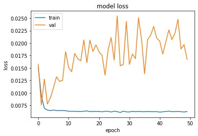
[66]:
# make predictions
trainPredict = model.predict(trainX, batch_size=batch_size) #Now we need to specify the batch_size
model.reset_states()
testPredict = model.predict(testX, batch_size=batch_size)
# invert predictions
trainPredict = scaler.inverse_transform(trainPredict)
trainY = scaler.inverse_transform([trainY])
testPredict = scaler.inverse_transform(testPredict)
testY = scaler.inverse_transform([testY])
# calculate root mean squared error
trainScore = np.sqrt(mean_squared_error(trainY[0], trainPredict[:,0]))
print('Train Score: %.2f RMSE' % (trainScore))
print('Train R^2: ', r2_score(trainY[0], trainPredict[:,0]))
testScore = np.sqrt(mean_squared_error(testY[0], testPredict[:,0]))
print('Test Score: %.2f RMSE' % (testScore))
print('Test R^2: ', r2_score(testY[0], testPredict[:,0]))
# shift train predictions for plotting
trainPredictPlot = np.empty_like(dataset)
trainPredictPlot[:, :] = np.nan
trainPredictPlot[look_back:len(trainPredict)+look_back, :] = trainPredict
# shift test predictions for plotting
testPredictPlot = np.empty_like(dataset)
testPredictPlot[:, :] = np.nan
testPredictPlot[len(trainPredict)+(look_back*2)+1:len(dataset)-1, :] = testPredict
# plot baseline and predictions
plt.plot(scaler.inverse_transform(dataset))
plt.plot(trainPredictPlot)
plt.plot(testPredictPlot)
plt.show()
1035/1035 [==============================] - 4s 3ms/step
508/508 [==============================] - 2s 3ms/step
Train Score: 3.16 RMSE
Train R^2: 0.5615679306120167
Test Score: 3.40 RMSE
Test R^2: 0.7020410118749283
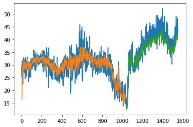
[67]:
# Try more nodes in the LSTM
# Using Early stopping
# reshape into X=t and Y=t+1
look_back = 3
trainX, trainY = create_dataset(train, look_back)
testX, testY = create_dataset(test, look_back)
# reshape input to be [samples, time steps, features]
trainX = np.reshape(trainX, (trainX.shape[0], 1, trainX.shape[1]))
testX = np.reshape(testX, (testX.shape[0], 1, testX.shape[1]))
print('trainX.shape: ',trainX.shape)
print('trainY.shape: ',trainY.shape)
print('trainX[:5]: ', trainX[:5].flatten())
print('trainY[:5]: ', trainY[:5])
es = EarlyStopping(monitor='val_loss', mode='min', verbose=0, patience=100)
mc = ModelCheckpoint('./models/best_model_LSTM.h5', monitor='val_loss', mode='min', verbose=0, save_best_only=True)
if 'model' in globals():
print('Deleting "model"')
del model
model = Sequential()
model.add(LSTM(8, batch_input_shape=(batch_size,1,look_back), return_sequences=True))
model.add(LSTM(8, batch_input_shape=(batch_size, 1,look_back)))
model.add(Dense(1))
start_time = time.time()
# Compile the model
model.compile(loss='mean_squared_error', optimizer='adam')
# Fit the model
history = model.fit(trainX, trainY, epochs=50, batch_size=1, verbose=0, validation_data=(testX, testY),callbacks=[es, mc])
# list all data in history
print('keys: ',history.history.keys())
print("--- Elapsed time: %s seconds ---" % (time.time() - start_time))
# load the saved model
model = load_model('./models/best_model_LSTM.h5')
plot_hist(history)
# make predictions
trainPredict = model.predict(trainX, batch_size=batch_size) #Now we need to specify the batch_size
model.reset_states()
testPredict = model.predict(testX, batch_size=batch_size)
# invert predictions
trainPredict = scaler.inverse_transform(trainPredict)
trainY = scaler.inverse_transform([trainY])
testPredict = scaler.inverse_transform(testPredict)
testY = scaler.inverse_transform([testY])
# calculate root mean squared error
trainScore = np.sqrt(mean_squared_error(trainY[0], trainPredict[:,0]))
print('Train Score: %.2f RMSE' % (trainScore))
print('Train R^2: ', r2_score(trainY[0], trainPredict[:,0]))
testScore = np.sqrt(mean_squared_error(testY[0], testPredict[:,0]))
print('Test Score: %.2f RMSE' % (testScore))
print('Test R^2: ', r2_score(testY[0], testPredict[:,0]))
# shift train predictions for plotting
trainPredictPlot = np.empty_like(dataset)
trainPredictPlot[:, :] = np.nan
trainPredictPlot[look_back:len(trainPredict)+look_back, :] = trainPredict
# shift test predictions for plotting
testPredictPlot = np.empty_like(dataset)
testPredictPlot[:, :] = np.nan
testPredictPlot[len(trainPredict)+(look_back*2)+1:len(dataset)-1, :] = testPredict
# plot baseline and predictions
plt.plot(scaler.inverse_transform(dataset))
plt.plot(trainPredictPlot)
plt.plot(testPredictPlot)
plt.show()
trainX.shape: (1035, 1, 3)
trainY.shape: (1035,)
trainX[:5]: [0.40584978 0.32951364 0.42946067 0.32951364 0.42946067 0.386174
0.42946067 0.386174 0.4079348 0.386174 0.4079348 0.40748814
0.4079348 0.40748814 0.30990687]
trainY[:5]: [0.386174 0.4079348 0.40748814 0.30990687 0.47879067]
Deleting "model"
keys: dict_keys(['loss', 'val_loss'])
--- Elapsed time: 319.7887361049652 seconds ---
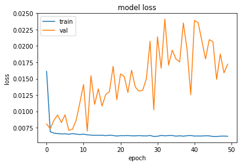
1035/1035 [==============================] - 4s 3ms/step
508/508 [==============================] - 2s 5ms/step
Train Score: 3.35 RMSE
Train R^2: 0.5055799253426811
Test Score: 3.30 RMSE
Test R^2: 0.7181920183273924
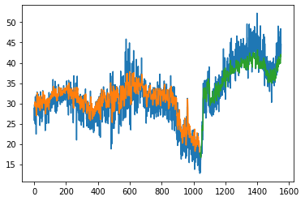
[ ]:
[ ]: